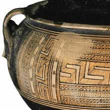
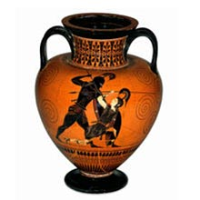
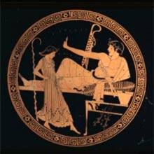

|
Geometric:
If you visit any museum with an ancient Greek collection you are sure to come across a number of Greek vases. Greek pottery was traded all over the Mediterranean world. Due to the durability of the vases, a vast amount of Greek pottery survives. The first Greek pottery appeared in around 6000BC. By about 1800BC, pottery was thrown on the wheel. The following information is a guide to the three of the most commonly used terms describing ancient Greek pottery. |
 |
| Black Figure Pottery: This type of pottery appears around 620BC. It applies to pottery where the main figures are in black. This type of pottery is achieved by painting on a thin layer of liquid clay is painted on to the unfired pot. Details on the figures were achieved by scraping a way this wash. Due to the high iron content of the clay it turns brown or black when fired. |
 |
| Red Figure Red figure pottery appears from around 530BC. The name applies to pottery where the main figures are in red against a black background. This is achieved by reversing the process detailed for black figure pottery. |
 |